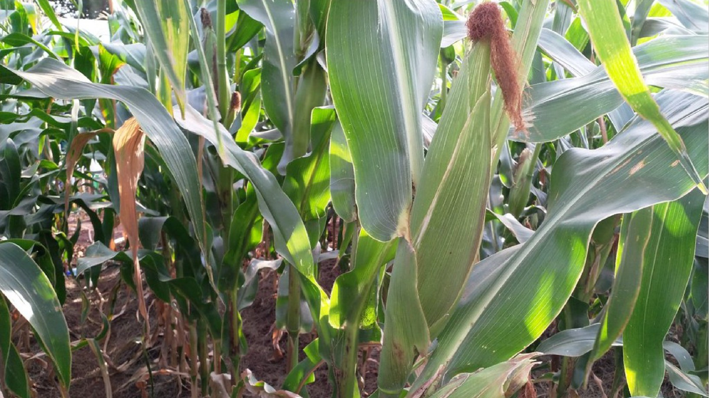

Maize
Maize is the most important cereal crop in Kenya. It is the staple food for most rural population. It is used as a human food, animal feed, production of beverages and also making of bio-fuel. Maize is a versatile crop with a wide genetic base and a large number of varieties growing across a range of agro-ecological zones (AEZ) and soil types and having differing maturity periods. However, maize grows best on well-drained, well-aerated, deep soils containing adequate organic matter and well supplied with requisite nutrients. Maize will produce 2 metric tons per hectare under good management
